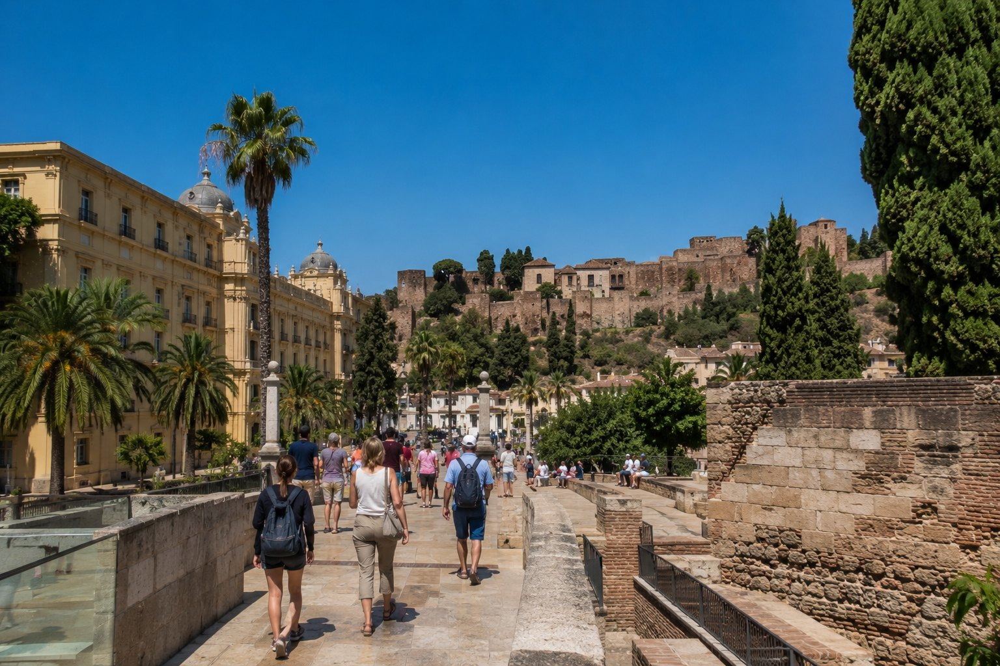

1
JPG klar
Hög prio · 236
Hyrbil/utflykt
malaga
Populära aktiviteter och utflykter i Málaga
bilder/web-ready/malaga/populara-aktiviteter-och-utflykter-i-malaga.jpg
bilder/web-ready/malaga/redo/populara-aktiviteter-och-utflykter-i-malaga.jpg
Prompt
Publishing metadata
- Prioritet
- Hög (236) · bas 10 | startsida +130 | prioriterad sida +24 | matchar H2-sektion +55
- Alt
- Populära aktiviteter och utflykter i Málaga i Málaga med människor och realistisk resemiljö
- Caption
- Populära aktiviteter och utflykter i Málaga i Málaga
- SEO
- En realistisk resebild från Populära aktiviteter och utflykter i Málaga i Málaga. Bilden visar Populära aktiviteter och utflykter i Málaga i Málaga under relevant resesäsong med naturligt folkliv och tydliga platsdetaljer som gör reseguideavsnittet mer visuellt trovärdigt.
- Target
- https://malaga.se/ / populara-aktiviteter-och-utflykter-i-malaga